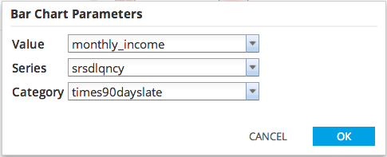
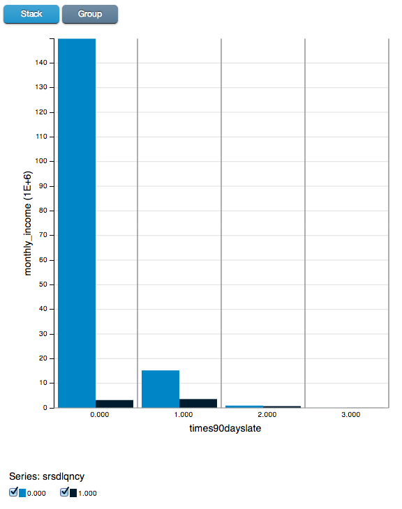

Bar Chart
- Use Bar Chart to create a bar chart of the specified columns in the dataset.
- Database operators must output a table/view for Bar Chart to be enabled.
- Hadoop operators must store results for Bar Chart to be enabled.
- Bar Chart is accessible from the Explore menu of the operator toolbar or by right-clicking an appropriate operator.

Category Type corresponds to X-axis.
Value Domain corresponds to Y-axis.
